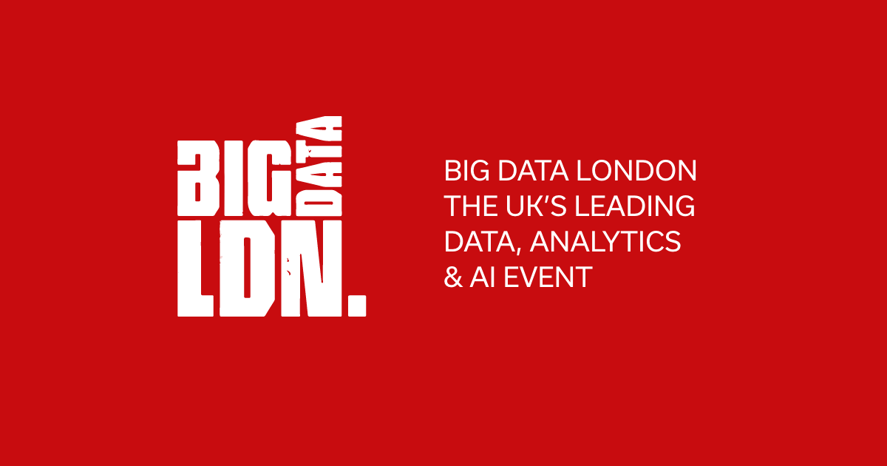

Featured Projects
Jupyter Notebooks


Excel Projects
Dashboard Screenshots
A Bit About Me
When I'm not diving into datasets or learning about the latest industry trends, you'll likely find me behind my drum kit or analyzing my next move on a chess board. These pursuits have surprisingly enriched my approach to data science – drumming has taught me about deliberate and persistent practice, while chess has honed my strategic thinking and problem-solving skills.
This portfolio showcases my hands-on experience while demonstrating my commitment to continuous learning in this rapidly evolving field.
Feel free to explore my projects and see how I'm applying data science principles in practical, impactful ways.
Medium Blog Posts
A Student's Take-aways from Big Data LDN 2024
Big Data LDN 2024 Take-aways Project Title 1
This project demonstrates...
Excel Analysis 1
This analysis explores...
Dashboard Screenshot 1
This dashboard visualizes...